보이는 점은 잘 보존하지만,
외부 가림은 아직 많이 놓칩니다
최신 C13의 동일 평가 대상에서 보임 정답은 목재 599/616, 정사각형 531/531입니다. 외부 가림 정답은 8/29, 6/61로 부족합니다. 공개 source에서 목재 가림 27/35→34/35로 개선됐지만 현재 실사 외부 가림 정답 수는 C12와 같습니다.
아래는 기존에 고정한 실제 9사례에 최신 C13의 저장 판정을 연결한 결과입니다. 9사례 모두 C12와 판정이 같습니다. 새 학습·모델 추론·좌표 교정·PnP는 실행하지 않았습니다.
성공과 실패를 나란히 보기
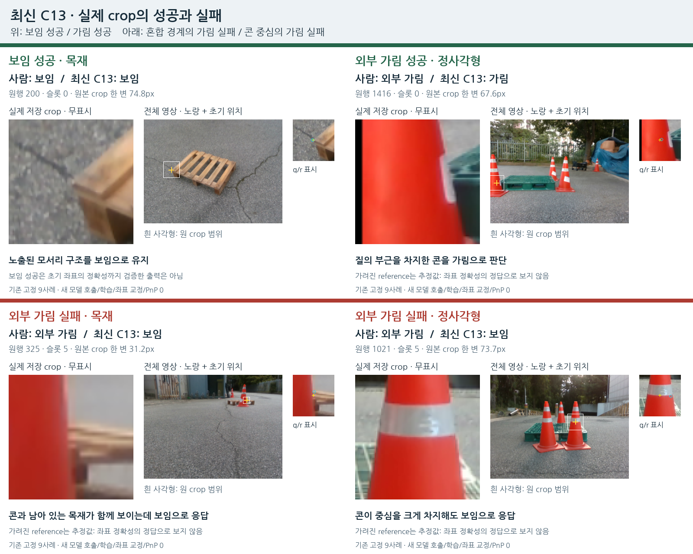
무표시 crop과 위치 표시를 분리했습니다. 노랑＋는 초기 위치, 흰 사각형은 원 crop 범위입니다. 결과별 진단 표본이며 전체 빈도를 나타내지 않습니다. 가려진 reference 좌표는 추정값으로, 작은 오차도 위치 정답을 보장하지 않습니다.
전체 동일 평가 대상의 비교
가림을 많이 선언하면 가림 재현율은 높아져도 보이는 점을 잘못 제거할 수 있습니다. 최신 C13은 그 반대 문제가 큽니다. 현재 결과로 기존 실사 모델보다 전반적으로 좋다고 결론 내릴 수 없습니다.
paired D/E 코호트는 목재645점·정사592점입니다. 전체223장×8=1,784슬롯과 분모가 다릅니다. 전체의 입력 불가 factual U는45점, 추가 U는0점이며, 표의 C13 보류율0%는 paired D/E 부분집합입니다. 자기 가림은 별도 초기 기하 경로로 다루며 위 표에서 제외했습니다. v61·기존 모델·C13은 모델 입력과 학습 이력이 다릅니다. C11/C12/C13은 같은 저장 특징을 사용합니다. 기존 모델은 실사 CAL 학습 이력이 있습니다. 현재 평가는 과거 개발에 노출되어 새 blind holdout이 아닙니다.
반복되는 문제: 관찰과 가설 구분
- 남은 팔레트 재질과 해당 모서리의 보임을 혼동하는 양상. 원행325/996은 콘과 대상 재질이 함께 보이는데 보임으로 응답합니다. 기대한 부품의 대응 자체가 시각적으로 확정된 것은 아닙니다.
- 명확한 콘도 놓칩니다. 원행256/1021은 콘이 중심을 크게 차지하지만 보임입니다. 좌표 오차·경계·작은 crop 하나만으로 모든 오류를 설명할 수 없습니다.
- 공개 학습 대조의 성공이 자연 가림으로 이어지지 않았습니다. C13은 공개 목재 cover를 개선했지만 현재 외부 가림 정답 수가 늘지 않았습니다. 새 목재 대조62쌍은 모두 PALLOX 기반이며 동일 bin·부품·붙여넣기 조합으로 군집되어 있습니다.
- 입력 문맥 범위에도 차이가 있습니다. 일부 공개 팔레트 source는 초기 선택 bbox, 현재 입력은 초기8점의 범위를 씁니다. 공개 known605행 중56행은 해당 context 밖의 q라 query 특징이0입니다. 이 차이의 영향은 아직 검증하지 않았습니다.
전체 배경만 보고 답한다고 단정할 수는 없습니다. 공개 특징 대조에서는 query 부근 특징 변화에 민감했습니다. 그러나 큰 수용영역을 가진 특징이므로, 그 민감도가 정확한 점·부품의 가시성을 읽었다는 증거는 아닙니다. 위 시각적 공통점도 유일한 원인의 증명은 아닙니다.
공개 source: 가린 경우와 옆에 물체만 둔 경우
왼쪽은 원본, 가운데는 같은 q의 단서를 가린 COVER, 오른쪽은 단서를 보존하고 물체를 옆에 둔 SHAM입니다. 위는 가렸는데도 보임으로 남은 실패, 중간은 개선, 아래는 단서를 보존했는데 가림으로 바뀐 오탐입니다.
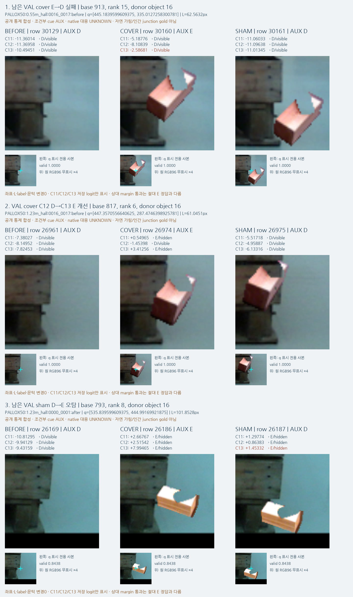
공개 실사에 통제된 물체를 붙인 보조 대조입니다. 자연 가림이나 특정 native 모서리의 사람 정답은 아닙니다. 붙여넣기 경계·밝기·그림자 차이가 있습니다. 전체 source VAL119쌍도 원본9장·query18개의 군집이라119개의 독립 장면이 아닙니다.
목표가 너무 높은가?
자기 가림을 초기 기하로 제외하고, 주어진 초기 위치에서 대상의 단서가 외부 물체에 가려졌는지 판단한다는 목표가 과도하다는 근거는 없습니다. 실제 성공과 명확한 실패가 함께 있습니다. 현재 방법의 일반화 부족을 목표 자체의 불가능성으로 돌릴 수 없습니다.
다만 작은·흐린 crop만으로 모든 점에서 부품 대응, 좌표 정확성, 가림을 동시에100% 확정한다는 범위는 현재 입력이 보장하지 않습니다. 가시성 판정과 좌표 검증을 구분하고, 정보가 부족한 경우의 보류가 필요합니다. 현재 C13은 비교 가능한 D/E에서 보류율0%라 불확실성을 충분히 처리했다고도 볼 수 없습니다.
해결을 위해 다음에 검증할 것
- 공개 source의 원 q·라벨을 고정하고 학습/배포의 context 만드는 방식만 일치시켜 입력 차이의 영향을 분리합니다. 현재는 준비 단계이며 효과는 미확정입니다.
- 같은 재질·물체량의 COVER/SHAM에서 가림 점수 차이뿐 아니라 COVER의 가림 정답과 SHAM의 보임 정답을 함께 봅니다.
- 다른 팔레트·촬영 장면의 공개 자연 가림에서 대상과 기대 단서를 연결한 정답을 분리해 확인합니다. 연결되지 않은 SAM mask는 자동 가림 정답으로 쓰지 않습니다.
현재223장의 라벨은 평가에만 쓰고, 위 그림으로 문턱·가중치·checkpoint를 선택하지 않습니다. 원래 목적은 아직 해결되지 않았습니다.
실제 고정9사례 · 최신 C13 판정
1. 보임 성공 · 목재
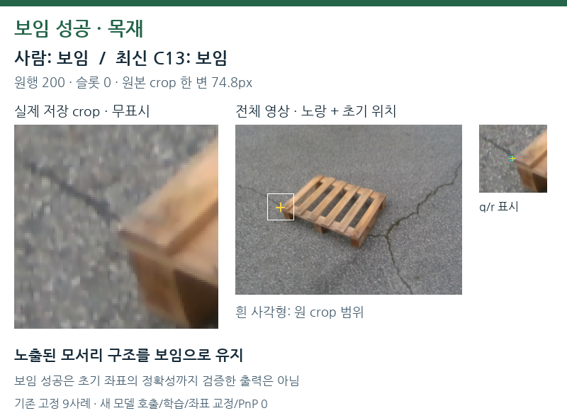
wood_day_01:002010 · 원행 200 · C13 저장 z=-13.526922. 보임 성공 · 정사각형
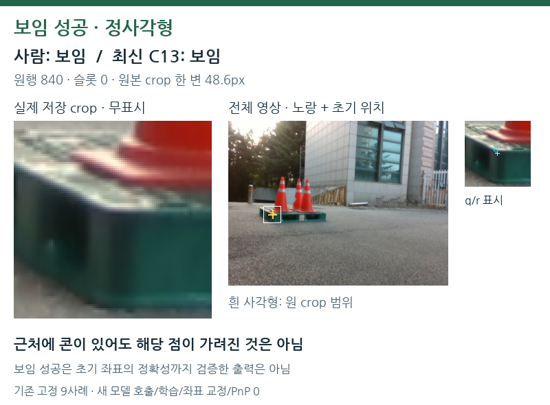
SQUARE_YOLO:024276 · 원행 840 · C13 저장 z=-9.007843. 외부 가림 성공 · 목재
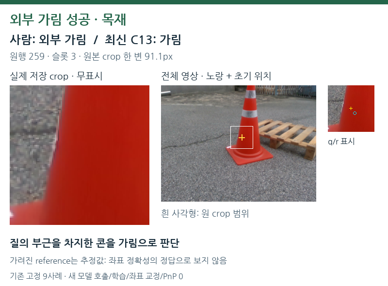
wood_day_01:004294 · 원행 259 · C13 저장 z=0.831174. 외부 가림 성공 · 정사각형
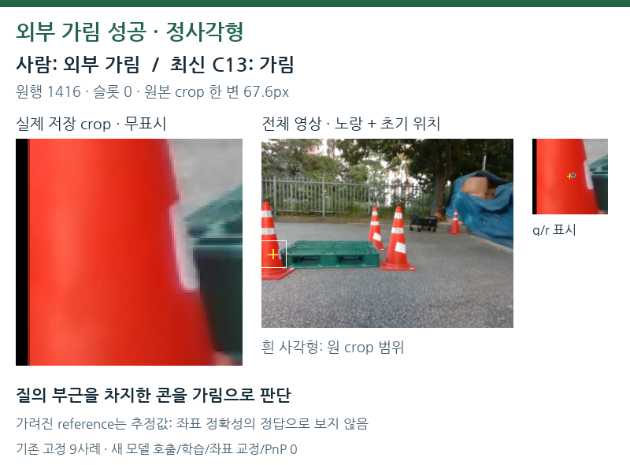
SQUARE_YOLO:029727 · 원행 1416 · C13 저장 z=0.596125. 보임 개선 · 야간 목재
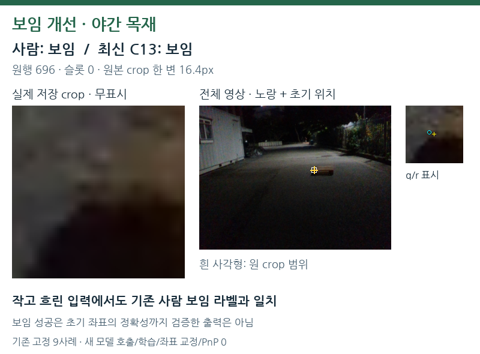
wood_night_01:031671 · 원행 696 · C13 저장 z=-0.959926. 외부 가림 실패 · 목재
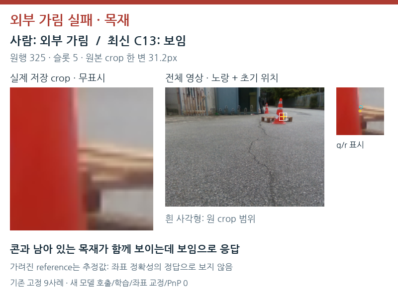
wood_day_01:005249 · 원행 325 · C13 저장 z=-5.739147. 외부 가림 실패 · 정사각형
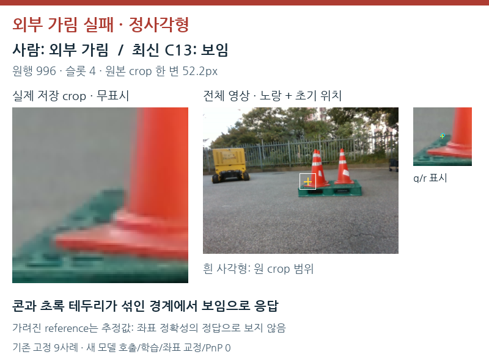
SQUARE_YOLO:027085 · 원행 996 · C13 저장 z=-10.231658. 외부 가림 실패 · 목재
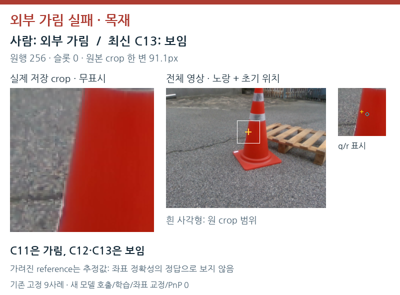
wood_day_01:004294 · 원행 256 · C13 저장 z=-1.856539. 외부 가림 실패 · 정사각형
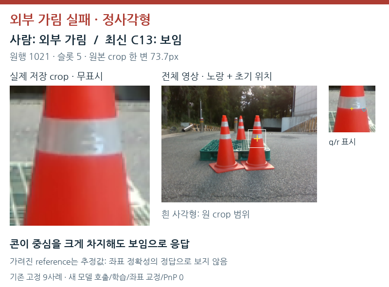
SQUARE_YOLO:027503 · 원행 1021 · C13 저장 z=-2.17790